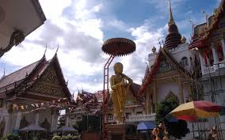
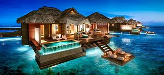
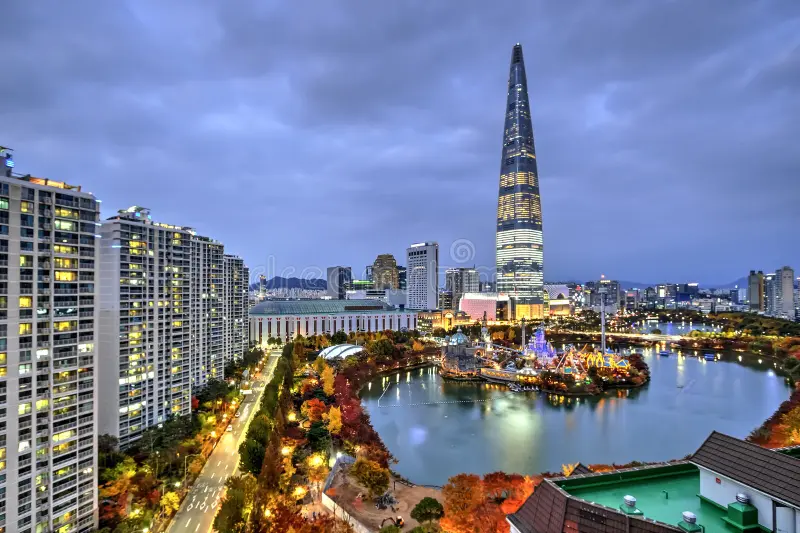

Japan offers a harmoniuous blend of traditional culture and futuristic
innocation. From tranquil shrines and samurai history to vibrant cities
like Tokyo and Osaka, it's a country where centuries-old customs meet
cutting-edge technology. Its cusine, natural beauty and hospitality make
it unforgettable
Activities you can do
Visit ancient temples like Kinkaku-ji in Kyoto
Explore Tokyo's neighborhoods like Shibuya, Akihabara and Asakusa
See Mt Fuji
Take the bullet train
Eat sushi and onsen
Thailand
BangkokChiang Mai

NonthaburiThai beachesThai Temples
Thailand is a vibrant, tropical paradise known for its golden temples,
friendly locals, and mouthwatering food. Whether you're after cultural
exploration, beach relaxation, or jungle adventures, Thailand delivers
with rich experiences and affordable luxury.
Activities you can do
Explore Bangkok’s Grand Palace and floating markets
Relax on the beaches of Phuket or Krabi
Visit elephant sanctuaries in Chiang Mai
Enjoy Thai street food in night markets
Go island hopping in the Phi Phi Islands
Bahamas
Beach in BahamasA view of the ocean

Bahamas HutsLong IslandBungalow in Bahamas
The Bahamas is a sun-soaked archipelago with crystal-clear waters,
marine adventures, and relaxed island vibes. With over 700 islands, it's
perfect for beach lovers, divers, and anyone looking to unwind in a
tropical setting with a dash of Caribbean charm.
Activities you can do
Swim with pigs at Exuma
Snorkel in the Blue Holes or Thunderball Grotto
Try conch salad and Bahamian rum
Visit Nassau for shopping and pirate history
Relax on pink sand beaches of Harbour Island
Singapore
Nightlife in SingaporeSingapore during the dayCable carsModern Singapore skylineModern Singapore skyline
Singapore is a dynamic city-state known for its cleanliness, diversity,
and world-class attractions. It seamlessly combines modern architecture
with cultural heritage and is a haven for foodies, shoppers, and
explorers looking for an efficient and stylish urban experience.
Activities you can do
Ride the cable car to Sentosa Island
Eat at hawker centers like Lau Pa Sat
Shop on Orchard Road
Explore Chinatown, Little India, and Arab Street
Visit Gardens by the Bay and Marina Bay Sands
Seoul
Traditional Korean hanok housesTraditional Korean hanok housesModern Seoul skylineHongdae

Lotte World Tower at blue hour
Seoul is a bustling metropolis where tradition and technology coexist.
From royal palaces and historic villages to neon-lit nightlife and
innovative tech, Seoul offers visitors a high-energy taste of modern
Korea rooted in deep cultural pride.
Activities you can do
Experience K-pop culture and themed cafés
Try Korean BBQ and street food
Hike in Bukhansan National Park
Explore shopping streets like Myeongdong and Hongdae
Visit Gyeongbokgung Palace and Bukchon Hanok Village